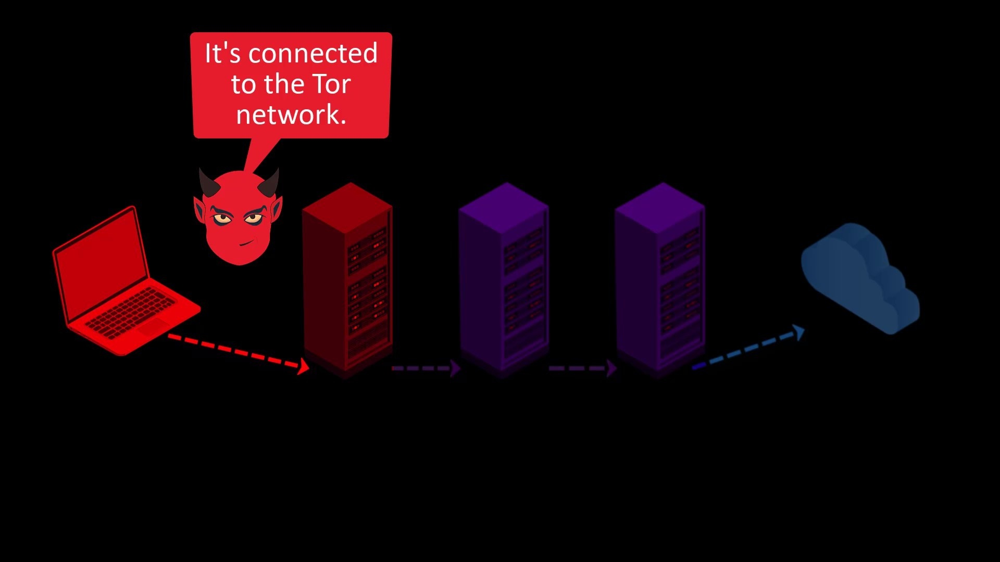
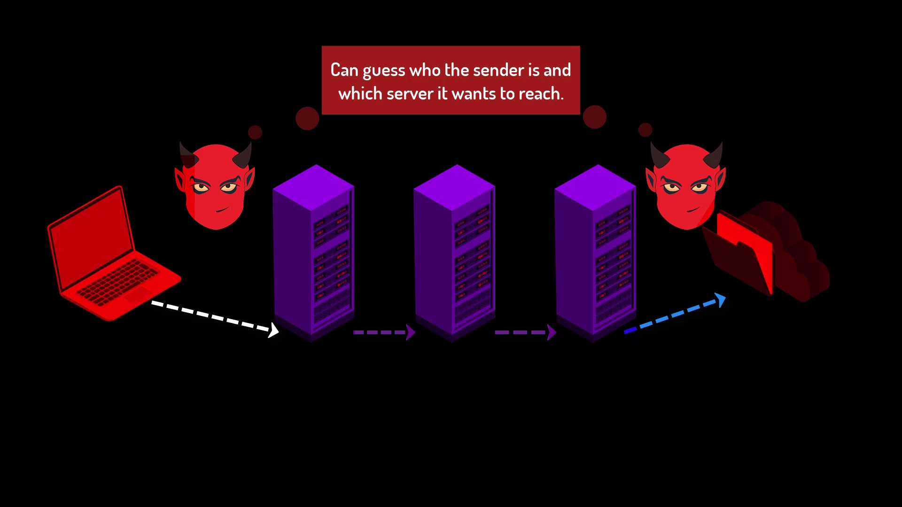
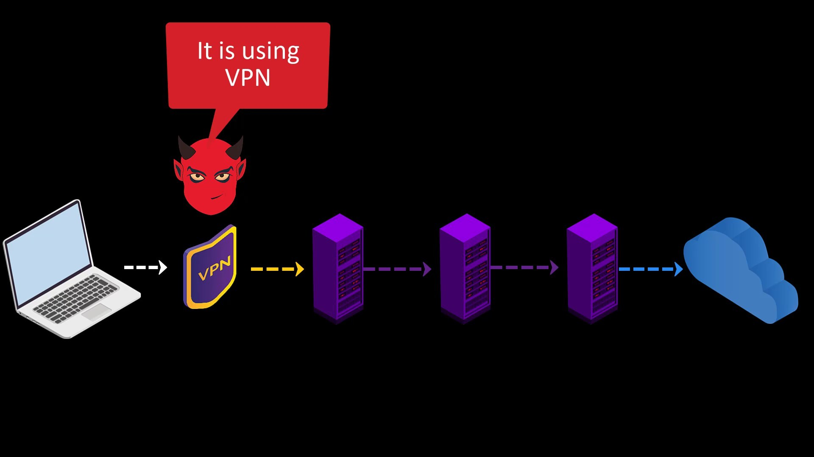
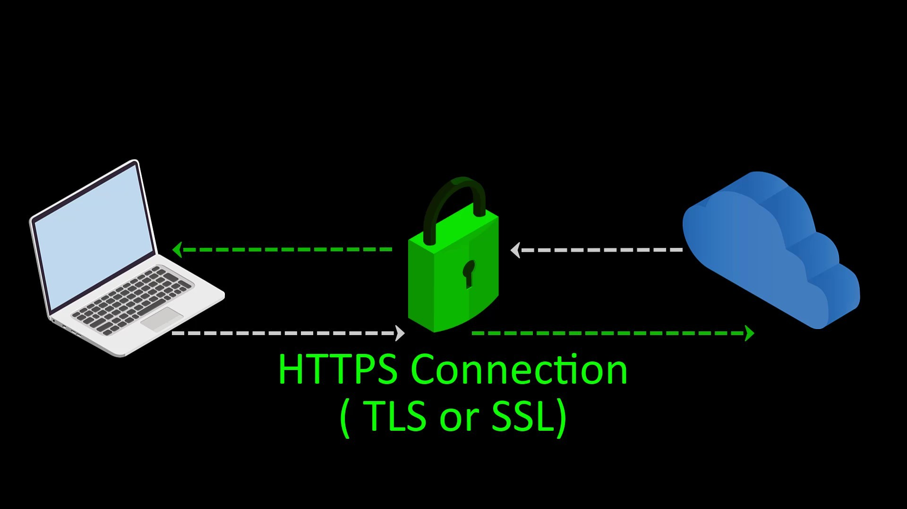

Fundamental Weakness - 2
When transferring your packet to the entry node and when your packet reaching the destination server from the exit node, your privacy can be breached by those who listen or control the entry and exit nodes.
If observers are only observing between you and the entry node, in other words, listening to the your network, they can only see that you are connecting to the Tor network. In some cases, even this may cause you to be under a deeper follow-up by becoming a suspect.

On the other hand, if they are listening to both your connection with the entry node and the connection between the exit node and the server with greater effort, by looking at the correlation between the time of sending your packet and the time of the packet reaching the server, they can conclude that you are interacting with this server and deepen the tracking.

Although it is low probability that this situation will occur, it may violate your security when it does. And this weakness is an unacceptable when we speak of true privacy and anonymity.
At this point, it is a must to use "VPN" in addition to Tor and to prefer "HTTPS" web addresses with "SSL/TLS" certificate. We will deal with these issues one by one in the course, but let's try to explain briefly for now.
If you use VPN before accessing the Tor network, observers will not be able to see that you are accessing the Tor network, as they will only see your VPN connection. This usage is called Tor over VPN.

Also, communicating only with servers with SSL certificates will encrypt the communication between the server and you, keeping sensitive information away from observers.
